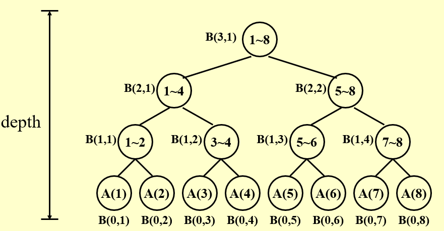
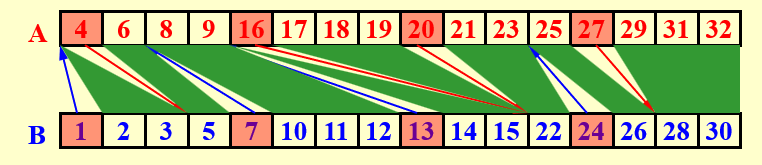

14:Parallel Algorithms
在实际情况中，处理器应当不止有一个核，因此我们会考虑并行算法。我们会提出一个并行算法的模型：
PRAM model¶
Parallel Random Access Machine(PRAM) 模型是一种基本的并行算法模型，它的想法是所有的处理器每时每刻都在工作，即使没有具体的指令需要它干，也会给一条空的指令让它空跑。在这个过程中，会出现读写冲突的问题，那么具体的解决方案有如下几种：
冲突解决
- Exclusive-Read Exclusive-Write (EREW) 不同时读写
- Concurrent-Read Exclusive-Write (CREW) 同时读不同时写
- Concurrent-Read Concurrent-Write (CRCW) 同时读写，此时需要写规则
- Arbitrary rule 任意一个先写
- Priority rule 最值等优先写
- Common rule 所有处理器想写同一个值时才写
但是该模型在体现处理器数量的作用上并不优秀，而且空跑处理器也算入效率计算范围令人难以接受，所以我们提出一个优化的模型：
WD model¶
Work-Depth(WD) 模型在 PRAM 的基础上，去除了空跑的处理器，从而我们可以更好地来衡量一个并行算法。
现在我们来定义两个衡量并行算法的参数：
- work-load(W): 可以理解成总的工作量，定义是在只有一个处理器的时候算法的时间复杂度；
- work-depth(D): 可以理解成并行树的深度，定义是在有无穷多处理器的时候算法的时间复杂度。
这么讲述可能比较抽象，接下来将用四个例子来说明上述内容。
Examples¶
Summation¶
问题描述
输入给定 \(A(1)\sim A(n)\)，求 \(\sum_{i=1}^nA(i)\)。
在并行的视角下，我们可以采用每次两两相邻求和的方式，会得到如下求和树图。其中我们定义了 \(B(h,i)\) 代表着自下而上第 \(h\) 层的第 \(i\) 个节点子树内的和。则很轻易可以得到：
求和树

我们可以用伪代码来描述这个过程，新定义 pardo 语句为并行执行：
for P_i, 1 <= i <= n pardo
B(0, i) := A(i)
for h = 1 to log(n) do
for P_i, i <= n / 2^h pardo
B(h, i) := B(h - 1, 2 * i - 1) + B(h - 1, 2 * i)
for i = 1 pardo
output B(log(n), 1)
此时，我们可以开始考虑 \(W\) 与 \(D\)。若只有一个处理器，则求和显然是 \(O(n)\) 的，所以 \(W=O(n)\)；如果有无限多的处理器，则每一层只需要 \(O(1)\)，总的是 \(D=O(\log n)\) 的。
bounds for p processors¶
那么对于有 \(p\) 个处理器的情况，我们如何计算它的用时 \(T_p\) 呢？考虑用上下界去逼近它。显然的是 \(\frac{W}{p}\) 是一个下界，从 PRAM 的观点来看，就是没有任何一个处理器在某一时刻空闲，也需要那么久的时间。那么下面我们可以证明它的上界是 \(\frac{W}{p}+D\)。
证明
我们假设第 \(i\) 层的工作量为 \(w_i\)，则有 \(W=\sum w_i\)，则用 \(p\) 个处理器的花销为：
这也强调了 \(W\) 和 \(D\) 在评估并行算法时的重要作用。接下来三个问题中，我们都会围绕减少 \(W\) 和 \(D\) 去展开。
Prefix-Sums¶
问题描述
输入给定 \(A(1)\sim A(n)\)，求 \(\forall i:1\leq i\leq n, \sum_{j=1}^iA(j)\)。
考虑如何并行地解决这个问题。在求和的基础上，我们需要并行地求出所有的前缀和。我们在上题定义的基础上，新增一个 \(C(h,i)\)，代表着自下而上第 \(h\) 层的第 \(i\) 个节点子树内最右节点的前缀和。这样我们就能自上而下地解决该问题。
递推求解
- 当 \(i=1\) 时，\(C(h,i)=B(h,i)\)；
- 当 \(i=2k\) 时，\(C(h,i)=C(h+1,i/2)\)；
- 当 \(i=2k+1\) 时，\(C(h,i)=B(h,i)+C(h+1,(i-1)/2)\)。
可以将上述过程写成伪代码如下：
// Same as summation problem
for P_i, 1 <= i <= n pardo
B(0, i) := A(i)
for h = 1 to log(n)
for i, 1 <= i <= n / 2^h pardo
B(h, i) := B(h - 1, 2 * i - 1) + B(h - 1, 2 * i)
// Now calculate the prefix sum problem
for h = log(n) to 0
for i even, 1 <= i <= n / 2^h pardo
C(h, i) := C(h + 1, i / 2)
for i = 1 pardo
C(h, 1) := B(h, 1)
for i odd, 3 <= i <= n / 2^h pardo
C(h, i) := C(h + 1, (i - 1) / 2) + B(h, i)
for P_i, 1 <= i <= n pardo
Output C(0, i)
简言之，我们采取了再次由上而下的递推求得了所有的前缀和，整个算法的 \(W=O(n),D=O(\log n)\)。
Merging¶
问题描述
给定两个升序数组 \(A(n),B(m)\)，将它们合并成一个升序数组 \(C(n+m)\)。
对于朴素的线性合并做法，不难发现该做法是 \(W=O(n),D=O(n)\)。假设 \(n,m\) 同阶。
接下来我们提出一种想法——通过排名来合并，定义 \(RANK(j,A)\) 代表着 \(B(j)\) 在 \(A\) 数组中排在第几个元素之后，也就是若 \(i=RANK(j,A)\)，则有 \(A(i)<B(j)<A(i+1)\)。同定义了 \(RANK(j,B)\)。现假设已经求得 \(RANK\)，那么以下方法实现了 \(W=O(n),D=O(1)\) 的并行合并过程：
for i , 1 <= i <= n pardo
C(i + RANK(i, B)) := A(i)
for i , 1 <= i <= n pardo
C(i + RANK(i, A)) := B(i)
于是我们考虑如何求得这个 \(RANK\)，事实上，朴素的想法就是对每个数并行地做二分，那么它的复杂度为 \(W=O(n\log n),D=O(\log n)\)。或者我们可以用线性扫描过去的做法，但是这个做法的总工作量以及工作深度与朴素的线性合并完全一样。
接下来我们提出一个重要的思想：分组(partition)。在并行算法中，找到一种合适的分组方法，在组间采用并行，组内采用不同的并行算法，有可能可以同时降低工作量和深度的开销。下面介绍一种能够做到 \(W=O(n),D=O(\log n)\) 的优秀做法：
令 \(p=\dfrac{n}{\log n}\)，在 \(A,B\) 中均匀地取出 \(p\) 个数作为 pivot。然后对这些 pivot 做二分查找，就能得到它们的排名，一个平凡的结论是，它们的排名不会相交，可以参考下图来理解这一点：
Info

这样，我们就将整个数组分成了 \(2p\) 组，在每个组内单独线性归并，最后合并是能够保证正确性的。那么每一组的大小约为 \(\log n\)，于是这个并行的组内合并过程有 \(W=O(\log n),D=O(\log n)\)，然后考察分组过程，并行地对 \(p\) 个数做二分，有 \(W=O(p\log n)=O(n),D=O(\log n)\)。因此最终的复杂度为 \(W=O(n),D=O(\log n)\)。
Maximum Finding¶
问题描述
在 \(A(n)\) 中找到最大值。
在并行算法中，找一个数组的最大值是一件非常值得研究的事情。我们可以借鉴求和部分的思路，用二叉树的形式，那么最终的工作量和深度和求和是相同的。但是我们有一些更好的思路。
Compare all pairs¶
这个做法非常的粗暴。初始化一个全为 \(1\) 的数组 \(B\)，随后并行地取所有 \(i,j\) 对，若 \(A(i)<A(j)\)，则 \(B(i)=1\)，否则 \(B(i)=0\)。此时会出现写冲突，于是我们采取 CRCW 中的 Common rule，也就是同一个位置写入值都相同时才写，那么所有的 \(i\) 中只有最大值对应的下标会全写入 \(0\)，因此最终并行读取 \(B\)，其中唯一的那个 \(0\) 就是最大值对应的位置。
Warning
此处的做法和 cy 课件不完全相同，因为笔者思考发现 cy 写的做法使用 CRCW 的 common rule 是不对的。
for P_i, 1 <= i <= n pardo
B(i) := 1
for i and j, 1 <= i, j <= n pardo
if (A(i) < A(j) || A(i) == A(j) && i < j)
B(i) = 1
else
B(i) = 0
for P_i, 1 <= i <= n pardo
if B(i) == 0
A(i) is a maximum in A
有 \(W=O(n^2),D=O(1)\)。
Doubly-logarithmic Paradigm¶
接下来我们应用之前提出的重要思想 partition 来进一步优化。看到上方的 \(O(n^2)\)，我们就希望能够通过按 \(\sqrt{n}\) 分组，若每组内能求出最大值，我们就能在 \(W=O(n),D=O(1)\) 内解决该问题。那么每一组的开销是多少呢？我们有如下递推式：
这两个递推式可以通过取对数的方式求解：
递推求解
令 \(f(\log n)=\dfrac{W(n)}{n}\)，则 \(f(\log n)=f(\dfrac{1}{2}\log n)+1\)，故 \(f(\log n)=O(\log\log n)\)，也就是 \(W(n)=O(n\log\log n)\)。
同理 \(D(n)=O(\log\log n)\)。
该做法已经非常接近我们希望的 \(W=O(n),D=O(1)\) 了，但是还是不够。
我们尝试改变第一次划分的大小，令 \(h=\log\log n\)，然后我们按每 \(h\) 个一组划分。这样总共就有 \(\dfrac{n}{h}\) 组，此时对组内，我们采用线性的方式，在 \(W=O(n),D=O(h)\) 的时间内得到了 \(\dfrac{n}{h}\) 个值，我们只需要在这之中找到最大值就行。
此时我们再次运用前面说的根号的方式分组，就会得到 \(W=O(\dfrac{n}{h}\log\log\dfrac{n}{h}),D=O(\log\log\dfrac{n}{h})\)，与前面得到的相加，得到：
这样一来，我们成功减小了总的工作量，但是深度仍没能达到 \(O(1)\)。
Random Sampling¶
事实证明，想要深度达到 \(O(1)\) 非常困难，于是我们退而求其次，希望在随机过程下，它正确的概率达到非常大，这就是随机采样(Random Sampling)的做法。
- 从 \(n\) 个元素中随机挑选 \(n^{\frac{7}{8}}\) 个元素，该过程 \(W=O(n^{\frac{7}{8}}),D=O(1)\)；
- 将选出的按 \(n^{\frac{1}{8}}\) 个一组分组，组内按全配对方式求最值，得到 \(n^{\frac{3}{4}}\)，该过程 \(W=O(n^{\frac{1}{4}}),D=O(1)\)；
- 依次类推，最终会得到 \(n^{\frac{1}{2}}\) 个元素，此时直接使用全配对，有 \(W=O(n),D=O(1)\)。
所以整个过程都是 \(W=O(n),D=O(1)\) 的。最后，我们不停地重复上述过程，直到找到最大值，这部分是随机算法的内容。事实上，我们不一定要取 \(n^{\frac{7}{8}}\)，取任何 \(n^{1-2^{-k}}\) 都能进行上述过程，不过在 \(k\) 过大时，会退化成 Doubly-logarithmic Paradigm，因此我们通常只取 \(k=3\)。此时无法在可接受时间内找到最大值的概率应该不超过 \(O(\dfrac{1}{n^c})\)，其中 \(c\) 为常数。